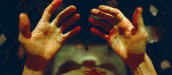
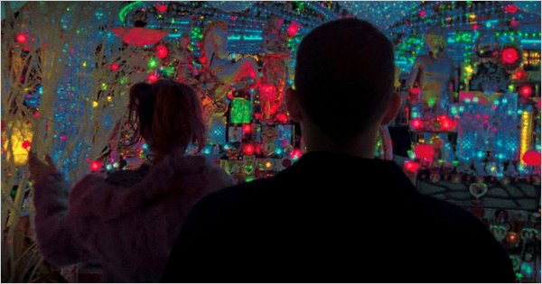
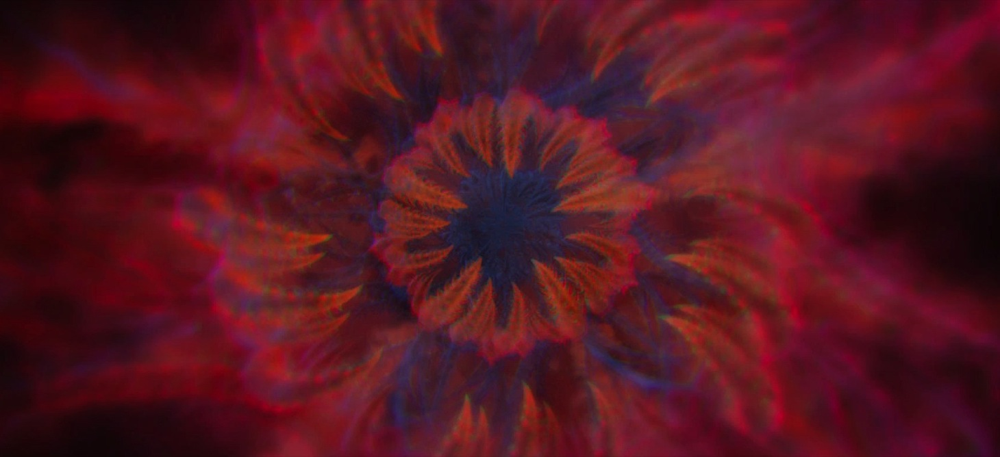

Film of the Week (2/12/18)
Enter the Void

Enter the Void is a film made by French director Gasper Noé.
Released in 2009, it follows young American drug dealer Oscar who gets shot
and as a result watches the subsequent events in an out of body experience.
The film is quite experimental and shifts between past and current events.
It is a very cinematic movie and was shot from a first person point of view.
It also is supposed to be taking place continually with no real cuts.
Story of the Film:

The film takes place in the “neon-lit nightclub environments of Tokyo”
where Oscar lives with his sister Linda. He spends his time there with his close friend Alex,
spending time in and out of the city and doing lots of different drugs.
His use of drugs is a large part of the film, as there are several visual sequences that are
supposed simulate his tripping on DMT among other drugs. They are also central to the story as his
selling of them ultimately leads to his death. The theme of reincarnation is also explored,
primarily through the introduction of The Tibetan Book of the Dead.
Development of the Film:

Gasper Noé had been trying to make the film for years, coming up
with the idea when he was a teenager experiencing with different psychedelics.
His first attempt to get the film funded was unsuccessful, but after he made his
film Irréversible, which was a success, it became much easier to get the film of the ground.
He originally premiered a rough cut of the film at the 2009 Cannes Film Festival,
but the final cut premiered at the 2010 Sundance Film Festival.
How it’s Shot:

While in the first person point of view the film jumps from Oscar’s memories,
both growing up as a child, and recently before his death in Japan. When following the events
after his death, the movie is shot from an overhead view, and cuts between buildings and streets.
It does this partially by building sets on sound stages and by creating environments entirely in CGI.
Back